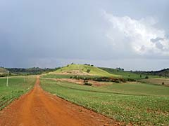
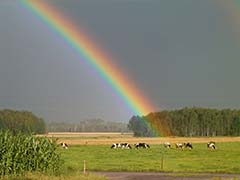
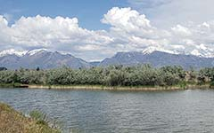
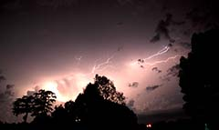
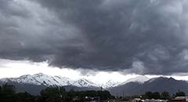

Watching the rain fall while driving down a dirt road

A rainbow breaking through the stormy skiesThe snowstorm blanketing the town fields

Blue skies breaking through the clouds after days of storms

Lightning in the night sky

The storm is brewing over the mountains